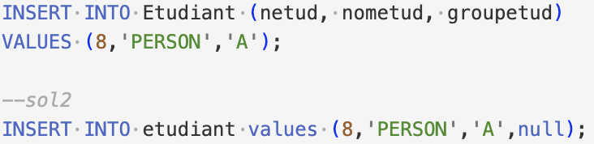

@Amaxi76 / Mes compétences / Compétence 4 : Gérer des données de l'information
Requête d'interrogation avec filtrage des résulats et renommage de la colonne
Requête d'interrogation avec condition (tous les achats du client 101)
Requête d'interrogation avec requête embriquée, jointure et opérateur IN
Différentes manières de réalisation d'une même requête
Création de vue
Création de fonction
Modification d'un attribut d'une table
Modification d'un tuple de la base de donnée
Ajout de tuple dans la base de donnée
Supression de tuple dans la base de donnée
Modification des droits
Élaboration d'un Modèle Conceptuel de Donnée
Élaboration d'un Modèle Conceptuel de Donnée
Élaboration d'un modèle Modèle Logique de Donnée
Élaboration du script de création des tables
Élaboration du script d'insertion des tables